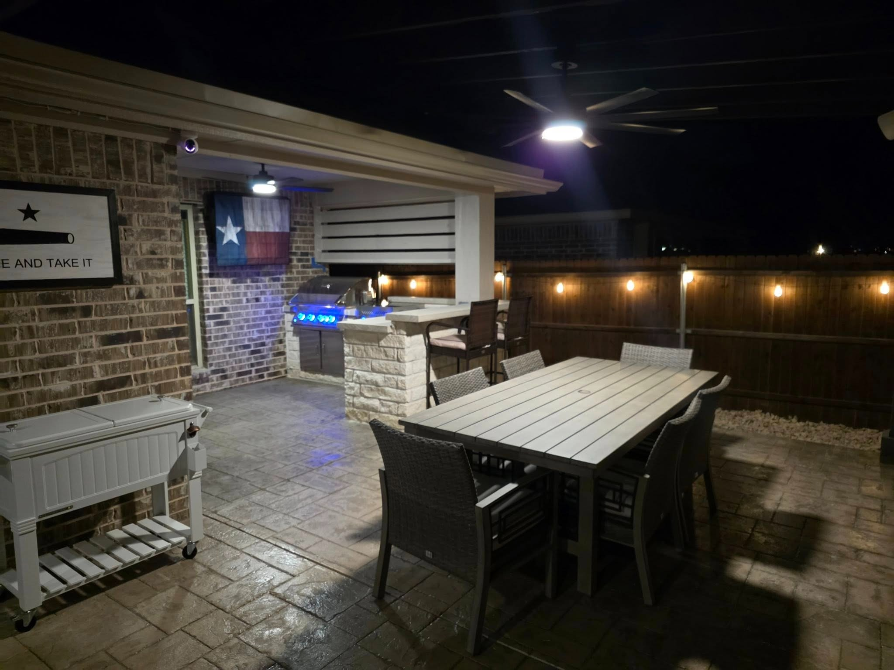
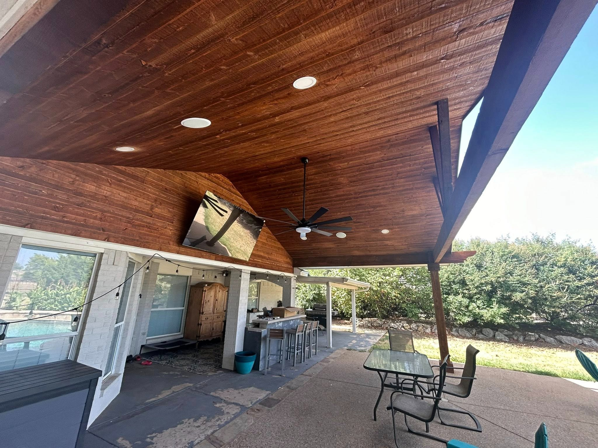
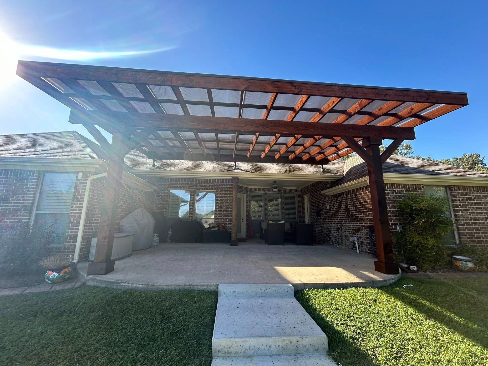
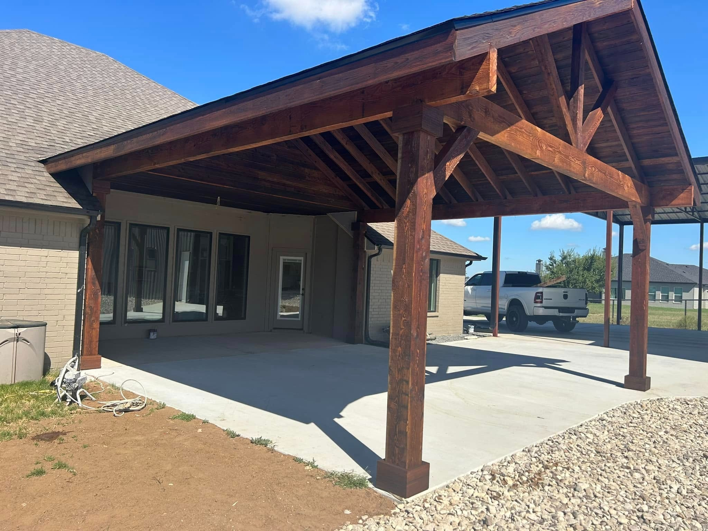
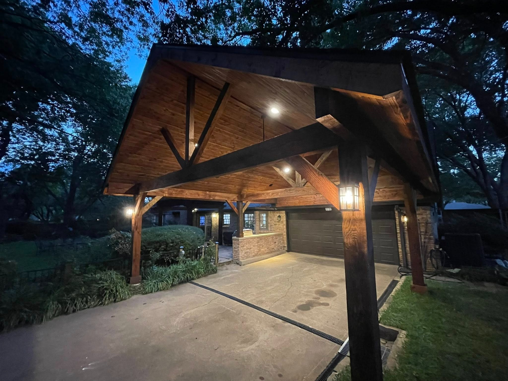
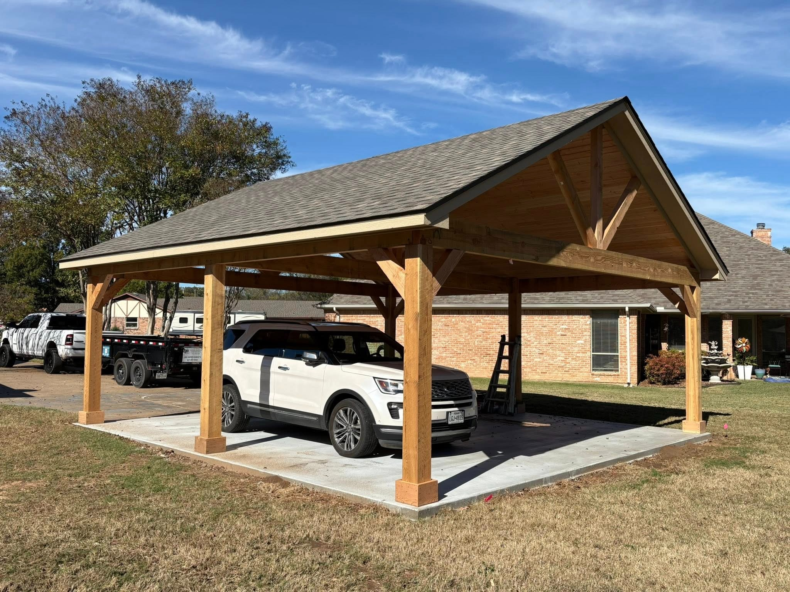
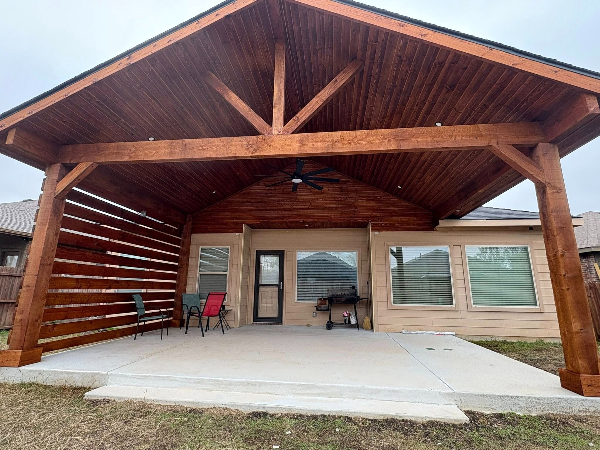
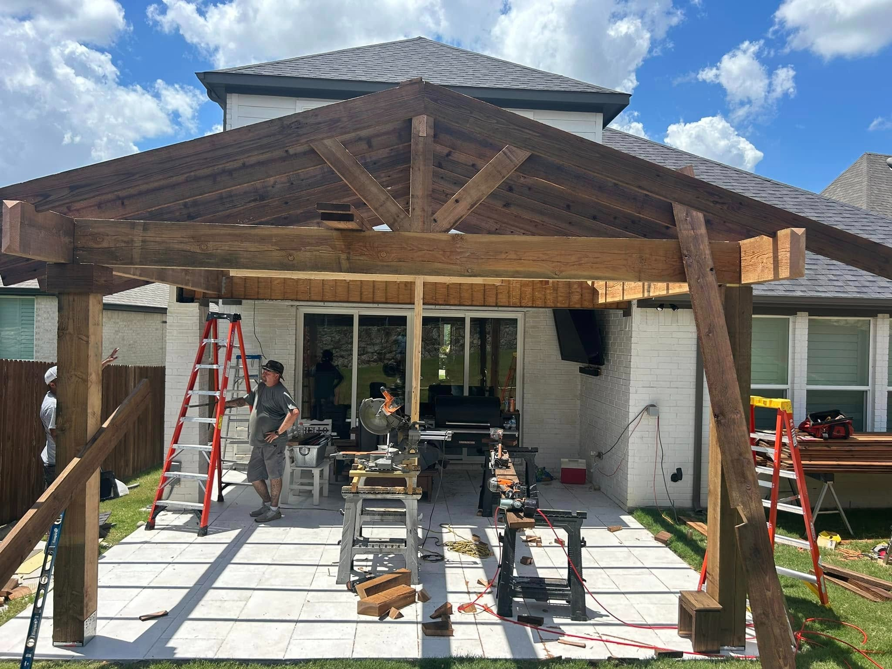
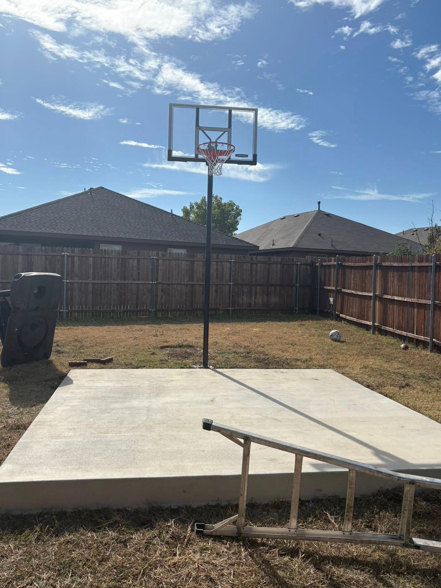
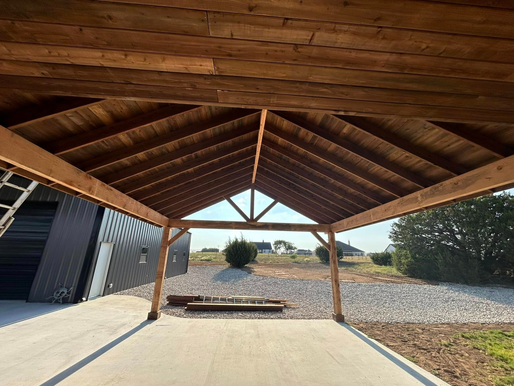

Featured Projects
Explore our completed projects — click any project to see the full photo gallery.
Have a project in mind? Get a free estimate →

Complete Outdoor Kitchen & Patio
Full backyard transformation featuring a pergola with stamped concrete, custom outdoor kitchen with grill and beverage fridge, lounge area with fire pit, and string lights.
View Project →
Poolside Pavilion & Covered Patio
Full poolside transformation with stained cedar gable pavilion, tongue-and-groove ceiling, mounted TV, custom bar area, and pool access — from bare concrete to entertainment hub.
View Project →
Pergola with Polycarbonate Roof Panels
Stained cedar pergola with translucent polycarbonate panels for filtered light and rain protection, plus integrated rooftop solar panels overlooking the pool and spa.
View Project →
White Brick Gable Patio Cover
Large gable-roof patio cover on white painted brick home with heavy cedar posts, king-post trusses, and tongue-and-groove ceiling — from framing through staining.
View Project →
Board-and-Batten Home — Patio Cover & Entry
Comprehensive exterior upgrade with stained cedar gable patio cover in back and matching cedar accent posts and decorative trusses on the front entry.
View Project →
Timber-Frame Carport & Porte-Cochère
Large cedar timber-frame carport with gable roof, decorative king-post trusses, ceiling fan, lantern sconce lighting, and attached covered patio.
View Project →
Rural Timber-Frame Carport Build
Ground-up timber-frame carport on a rural property — from concrete slab and framing through to finished stained structure with king-post trusses and tongue-and-groove ceiling.
View Project →
Gable Patio Cover with Privacy Wall
Complete backyard patio transformation — from a small existing porch to a full gable-roof patio cover with decorative trusses, ceiling fan, and horizontal cedar slat privacy wall.
View Project →
Suburban Gable Cover & Pergola Build
Stained cedar gable patio cover with connected pergola extension on a two-story suburban home, featuring decorative king-post trusses and heavy cedar posts.
View Project →
Backyard Basketball Court Slab
Custom concrete slab poured for a backyard basketball court with in-ground hoop installation — from bare grass to a level, finished playing surface.
View Project →
Rural Pavilion Build
Large timber-frame pavilion on a rural property with stained cedar, king-post trusses, tongue-and-groove ceiling, and concrete slab.
View Project →
Brick House Patio Roof Extension
Patio roof extension on a single-story brick home — expanding the existing covered area into a full-width roofed patio with electrical rough-in.
View Project →Want to see more of our work?
Follow us on Facebook and Instagram for the latest project photos from the DFW area.